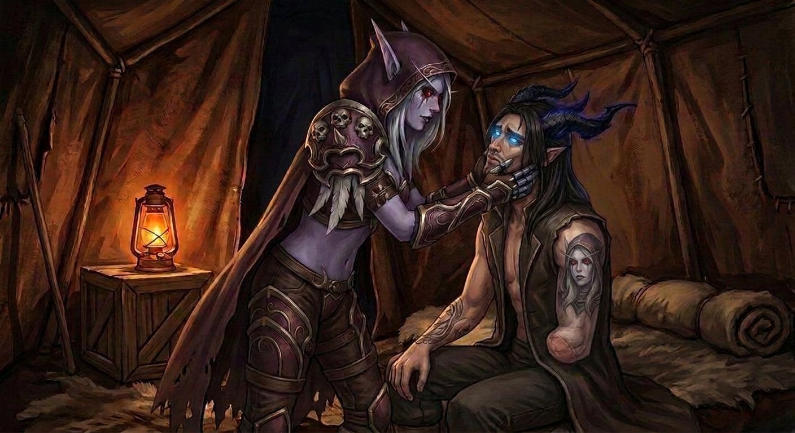

Capítulo Vinte e Nove
O que eu não mereço
A dúvida não veio de repente.
Veio devagar. Como uma rachadura numa parede que a gente não nota até perceber que a parede inteira está comprometida. Começou com uma olhada para a mão esquerda — a de metal, a brilhante, a que não era dele antes — e continuou com uma olhada para a mão direita, a de pele, a que sempre foi, e terminou com uma pergunta que ele não queria fazer mas que não tinha como evitar:
E se nada disso for meu?
Nathan ficou sentado na pedra em frente à tenda, olhando para a Gorja. O cinza de sempre. O zumbido de sempre. O mundo que não existia e que existia demais, do jeito que a Gorja era — um lugar feito de nada e de peso, como se o vazio tivesse massa.
Ele pensou no molde.
Naquela cópia perfeita dele que estava em algum lugar — ou em nenhum lugar, porque o Colecionador tinha dito que o molde já tinha servido ao seu propósito, que Nathan era o produto final, a versão que ficou, e que o molde era só ferramenta descartada. Ele pensou que se o Colecionador tinha fabricado um corpo, e fabricado memórias, e fabricado conhecimento — o molde, o caratê, a habilidade com armas, a compreensão de idiomas que ele nunca estudou — então onde terminava a fabricação e começava ele?
Onde estava a linha?
A tatuagem no antebraço direito era dele. Tinha sido feita antes — antes da Gorja, antes do Colecionador, antes de tudo. Ele se lembrava da agulha, da dor, do cheiro de tinta fresca, do artista dizendo "tem certeza? Rosto é para sempre", e ele dizendo "tenho" sem hesitar.
Isso era dele.
Mas o resto?
✦
Ele tentou esconder. Não do jeito antigo — não do jeito de quem mede três passos e calcula distância e finge que o peito não aperta. Escondeu do jeito de quem não quer preocupar. Ficou quieto. Respondeu menos. Olhou mais para o horizonte e menos para ela.
Durou exatamente quatro horas.
Porque Sylvanas Windrunner — que tinha comandado exércitos, que tinha governado nações de mortos-vivos, que tinha negociado com reis e rainhas e deuses — era, acima de tudo, a mulher mais observadora que já existiu. E Nathan era o homem mais transparente que ela já tinha tido o privilégio de observar.
— Você está diferente — disse ela, no meio da tarde, sem olhar para ele, limpando o arco.
— Não estou.
— Está.
— Sylvanas, eu juro que não estou.
Ela parou de limpar o arco. Olhou para ele. Olhos vermelhos que liam tudo — a postura, o tom, o ritmo da respiração, o jeito como os dedos dele tamborilavam na coxa num padrão que ele só fazia quando estava tentando não pensar em algo.
— Hoje à noite — disse ela. — Na tenda. E você vai me contar.
Não foi pedido. Não foi sugestão. Foi constatação.
E Nathan, que tinha enfrentado enxames, fendas, corredores que não terminavam e um ser que colecionava almas como quem coleciona selos, não teve a menor condição de dizer não.
Porque não queria. Porque a última coisa que ele queria era esconder algo dela. Porque esconder era o oposto de tudo que eles tinham construído.
— Tá — disse ele.
✦
Elyra viu. Claro que viu.
Elyra via tudo que não era da conta dela — era provavelmente o talento mais desenvolvido dela, acima de combate e acima de culinária (que, honestamente, não era um talento).
— Ele tá estranho — comentou ela, baixinho, para Varokh, enquanto os dois preparavam o jantar (ou o que passava por jantar: raízes, carne seca, e a esperança de que o fogo fosse suficiente para disfarçar o gosto de nenhuma das duas coisas).
Varokh grunhiu. O grunhido significava "eu sei".
— Você acha que é sobre o molde?
Outro grunhido. Esse significava "provavelmente".
— A Sylvanas vai resolver.
Grunhido. "Sempre resolve."
Elyra olhou para ele de lado.
— Você fala mais do que parece, sabia?
Varokh mexeu o ensopado.
— Isso não foi elogio.
— Também não foi reclamação — disse Varokh, que falou mais palavras naquela frase do que tinha falado nas últimas três horas, e voltou a mexer.
✦
A tenda fechou.
O mundo lá fora — Varokh, Elyra, o ensopado, a Gorja, o Colecionador, o molde, a porta que esperava — ficou do outro lado do couro. A lamparina estava acesa. A luz era baixa, quente, dourada, e fazia sombra nos cantos do rosto dela quando ela se sentou na frente dele, de pernas cruzadas, e esperou.
Sylvanas não apressava. Nunca. Ela esperava com a paciência de quem tinha aprendido que o silêncio é a melhor ferramenta de extração que existe — e que a maioria das pessoas, quando deixada em silêncio por tempo suficiente, acaba dizendo tudo que tentava esconder.
Nathan aguentou vinte e três segundos.
— Eu tava pensando no molde — disse ele.
— Eu sei.
— Eu tava pensando se... — Ele parou. Engoliu. — Se o que eu sinto por você é meu. Ou se foi colocado ali. Como o caratê. Como os idiomas. Como a habilidade com espada.
Sylvanas não se mexeu. Mas os olhos dela — os olhos vermelhos, aqueles olhos que já tinham visto tudo e que raramente se surpreendiam — suavizaram. Não muito. Um milímetro. O bastante.
— Por que você acha isso?
— Porque o Colecionador fabricou tudo. O corpo, as memórias, o conhecimento. Se ele podia colocar a habilidade de lutar na minha cabeça, ele podia colocar qualquer coisa. Inclusive... — A voz falhou. — Inclusive isso. O que eu sinto por você.
O silêncio durou três segundos. Longos. Pesados. E então Sylvanas fez uma coisa que ela raramente fazia — se aproximou. Não dos três passos de antes, não da distância calculada. Perto. Perto o bastante para que os joelhos deles se tocassem, e as mãos dela encontrassem as dele — a de metal na direita, a de pele na esquerda — e seguraram com firmeza.
— Olha pra mim.
Ele olhou.
— Você lembra de quando fez a tatuagem?
— Lembro.
— De quando ouviu Lament of the Highborne pela primeira vez?
— Lembro.
— Do apartamento? Da janela que não fechava? Do vizinho do violão?
— Lembro de tudo.
— Então escuta. — Ela apertou as mãos dele. Não forte — firme. — A tatuagem é sua. Foi feita antes do Colecionador. Antes da Gorja. Antes de tudo. Você lembra do artista. Lembra da agulha. Lembra de ter escolhido o rosto. Isso não foi fabricado.
— Não. Isso é meu.
— E a música? Quando você ouviu pela primeira vez e sentiu que ela era sobre você?
— Foi real.
— E o que você sentiu quando me viu pela primeira vez aqui? Quando eu tirei você de baixo daquela coisa e você olhou pra mim e disse o meu nome?
Nathan engoliu.
— Eu senti que... que eu tinha te encontrado. Que eu tinha te procurado a vida inteira sem saber que estava procurando.
— E isso — disse Sylvanas, baixinho — foi fabricado?
Ele não respondeu imediatamente. Porque a resposta honesta exigia pensar, e pensar doía, e doer era justamente o que ele estava tentando evitar desde o café da manhã.
— Eu não sei — disse ele, finalmente. — Eu não sei mais o que é meu e o que foi colocado. E isso me assusta. Porque se o que eu sinto por você não for meu, então eu sou só... um molde que anda. Uma cópia com sentimentos emprestados. E você merece mais do que isso.
✦
E foi aí que Sylvanas Windrunner quebrou.
Não do jeito que os vivos quebram — com lágrimas, com soluços, com o corpo inteiro se dobrando sobre si mesmo. Sylvanas não chorava. Não soluçava. Não se dobrava. Ela tinha passado por coisas que quebrariam dez pessoas, e tinha se reconstruído tantas vezes que a própria ideia de "quebrar" tinha perdido o sentido original para ela.
Mas ela quebrou do jeito dela. Do jeito que só Nathan via.
Ela soltou as mãos dele. Levantou os braços. E puxou ele para si — o rosto dele contra o peito dela, os braços dela em volta dos ombros dele, segurando com uma força que era ao mesmo tempo proteção e desespero e amor e raiva e tudo que ela não sabia nomear mas que sentia com uma intensidade que quase doía.
— Escuta — disse ela, a voz vibrando contra o cabelo dele, mais baixa e mais rouca do que de costume, como se as palavras estivessem sendo arrancadas de um lugar fundo que ela raramente acessava. — Escuta o que eu vou dizer, e escuta bem, porque eu não vou repetir.
Nathan se segurou nela. As mãos — as duas, a de metal e a de pele — nas costas dela, agarrando o tecido da armadura, porque ele precisava de algo sólido, algo que não fosse dúvida, algo que fosse real.
— Eu não escolho por engano — disse Sylvanas. — Eu cometi muitos erros na minha vida. Antes e depois da morte. Mas eu nunca, nem uma vez, escolhi errado sobre quem deixar entrar. E eu deixei você entrar. Não o molde. Não a fabricação. Não o Colecionador. Você.
— Como você sabe que—
— Porque eu sei a diferença. — Ela se afastou o suficiente para olhar nos olhos dele. Perto. Tão perto que ele via as marcas escuras abaixo dos olhos dela, as pequenas imperfeições que a distância escondia e que a proximidade revelava. — Eu passei uma eternidade cercada de gente que me amava pelo que eu era capaz de fazer. General. Rainha. Líder. Arma. Eles amavam o que eu fazia, não quem eu era. E eu aprendi — do jeito difícil, do jeito que se aprende tudo que importa — a diferença entre ser amada pelo que faço e ser amada pelo que sou.
— Sylvanas...
— O que você faz não me importa. Você podia não saber segurar uma espada. Podia não ter o caratê, nem os idiomas, nem a prótese, nem nada do que o Colecionador colocou. Sabe o que eu amo? — Os olhos dela estavam úmidos. Não chorando — Sylvanas não chorava — mas úmidos, brilhantes, como se algo dentro dela estivesse transbordando e ela não tivesse mais como segurar. — Eu amo que você penteia meu cabelo com a mão que sente. Eu amo que você me oferece café toda manhã sabendo que eu não como. Eu amo que você limpava a tatuagem do meu rosto mesmo quando estava coberto de sangue e poeira. Eu amo que você olha para mim como se eu fosse a coisa mais importante do mundo, mesmo sabendo que eu matei milhares de pessoas. Isso não foi fabricado. Isso é você.
Nathan não conseguiu segurar. Não tinha como. As lágrimas vieram — quentes, silenciosas, do tipo que não faz barulho mas que escorre sem pedir licença — e ele não se afastou, porque não havia mais motivo para se afastar, porque a mulher na frente dele estava segurando o rosto dele com as duas mãos e limpando as lágrimas com os polegares e dizendo, baixinho, do jeito que se diz a coisa mais verdadeira do mundo:
— Eu não amo moldes. Eu amo pessoas. E você é a pessoa mais real que eu já conheci.

✦
Ele beijou ela.
Não foi suave. Não foi devagar. Foi com tudo — com a boca e as mãos e o peito e a alma e o corpo inteiro dizendo o que a voz não conseguia dizer. Foi o beijo de quem esteve quatro horas se perguntando se merecia aquilo e que acabou de ouvir, da boca da pessoa mais importante do universo, que merecia. Que era real. Que era suficiente.
Ela respondeu do mesmo jeito. As mãos dela nas costas dele, descendo, subindo, agarrando, como se ela estivesse tentando segurar ele inteiro, como se tivesse medo de que ele fosse desaparecer se ela soltasse, como se séculos de solidão tivessem ensinado que as coisas boas se perdem quando se aperta pouco demais.
Ele a deitou. Devagar. Com cuidado — sempre com cuidado, porque ele nunca esquecia que o corpo dela era diferente, que a pele era fria, que o coração não batia, que as costelas eram mais frágeis do que pareciam. E ela puxou ele para cima, porque cuidado era bom mas ela não queria cuidado naquela noite, queria peso, queria presença, queria ele inteiro sobre ela, sentindo cada centímetro.
— Você é real — disse ela, quando ele se apoiou nos cotovelos para olhar para ela de cima, o rosto emoldurado pelo cabelo prateado espalhado no cobertor. — E eu sou real. E isso aqui — a mão dela subiu até o peito dele, sentindo o coração batendo rápido, vivo, teimoso — isso é real. Batida por batida. E enquanto isso bater, eu sei que você é você.
— E quando parar?
— Não vai parar. — Ela puxou ele para baixo, os lábios dela encontrando o pescoço dele, aquela respiração quente contra a pele fria dela. — Porque eu não vou deixar.
E Nathan fechou os olhos. E sentiu — as mãos dela no peito dele, a boca dela no pescoço dele, o mundo inteiro reduzido ao espaço entre dois corpos numa tenda de couro num lugar que não deveria existir — e soube, com uma certeza que não vinha da cabeça mas de um lugar mais fundo, mais antigo, mais verdadeiro do que qualquer molde poderia fabricar:
Isso era dele.
Sempre foi.
✦
Mais tarde — muito mais tarde, quando a lamparina já tinha baixado e o escuro da tenda era quase total — Nathan ficou deitado de costas, e Sylvanas ficou deitada sobre ele, a cabeça no peito dele, o braço dela atravessado sobre a barriga dele, pesada e quente (ou fria, ou morna — ele nunca tinha certeza, e não importava).
— Sylvanas?
— Hm.
— Obrigado.
— Pelo quê?
— Por me lembrar quem eu sou quando eu esqueço.
Ela ficou quieta. Depois se mexeu — subiu, apoiou o queixo no peito dele, e olhou para ele de baixo para cima, os olhos vermelhos brilhando na escuridão como duas brasas.
— Eu faço o mesmo — disse ela. — Toda vez que eu esqueço que posso ser alguma coisa além de arma, você me lembra. — Um silêncio. — A gente se lembra junto.
Nathan sorriu. Puxou ela para cima. Beijou a testa — aquele ponto entre o capuz e o cabelo, onde a pele era mais macia.
— Eu te amo — disse ele. — E isso é meu. E ninguém colocou aqui. E se alguém tentou, não precisou, porque já estava.
Sylvanas encostou o rosto no peito dele. Do jeito que só fazia com ele. Do jeito que ninguém mais no mundo — nos mundos — jamais tinha visto.
— Eu sei — disse ela, abafada. — Durma.
E ele dormiu. Com ela em cima dele, com a mão dela no peito dele, com o coração dele batendo — batida por batida — como prova de que ele era real. E de que o que ele sentia era dele. E de que ninguém, nem mesmo um Colecionador com um molde, poderia ter fabricado algo tão verdadeiro quanto aquilo.
✦
De manhã, Elyra olhou para Nathan e olhou para Sylvanas. Olhou de novo. E então sorriu — aquele sorriso de quem sabe mas escolhe não comentar — e passou o café para Nathan sem dizer nada.
Varokh também olhou. E grunhiu. O grunhido significava "resolvido".
E a vida continuou. Com o café, com o silêncio, com a mão dele na coxa dela por baixo do cobertor. Com a certeza — que ele não ia mais perder — de que o que eles tinham era real. E de que era dele. E de que era dela. E de que ninguém, nunca, em nenhum mundo, poderia tirar isso deles.